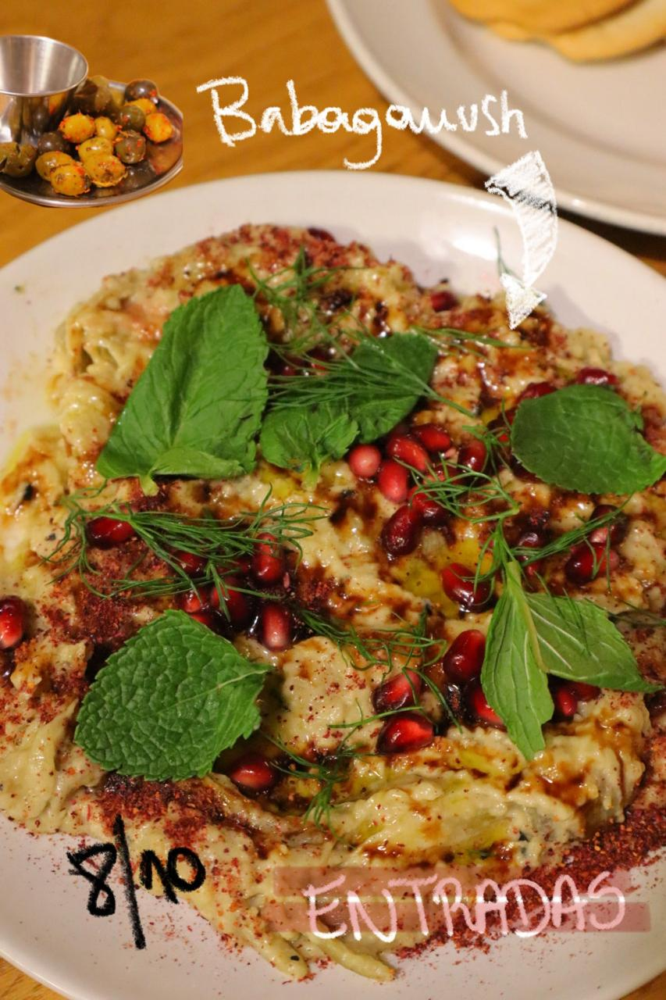
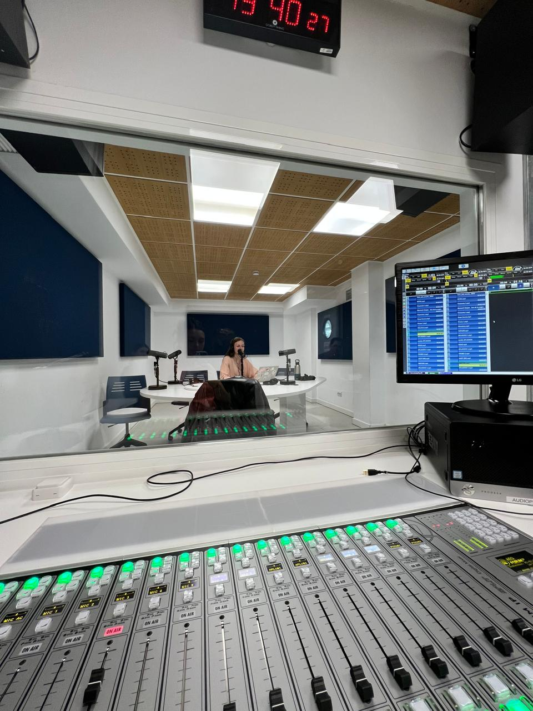
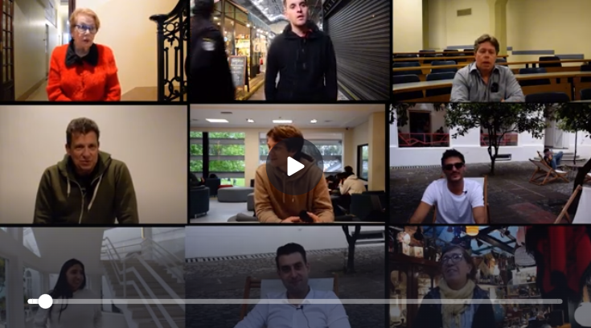
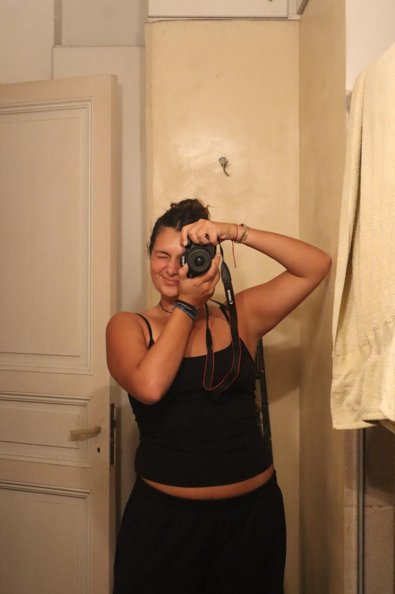

Casos de éxito
Proyectos que dejan huella
Hacé click en cada proyecto
para ver el caso completo.

↗

↗

↗

↗
Comunicadora Visual · Buenos Aires · UCA
Estrategia digital 360° con sensibilidad fotográfica. Ver lo que otros no ven — y convertirlo en contenido que conecta marcas con personas reales.

Sobre mí
Soy Guillermina Joaquin, pero muchos me conocen como Pepa. Comunicadora Digital formada en la UCA, con experiencia en fotografía y producción de contenido visual, estrategia digital y community management, y producción audiovisual — del podcast al cortometraje documental.
Mi filosofía se centra en la palabra foto: no busco capturar un objeto en sí, sino lo que pasa a su alrededor. Esa observación profunda transforma una pieza de comunicación en algo que la gente siente.
Todos los días busco conocer algo nuevo. Cuanto más amplíe mi mundo, más le puedo mostrar al resto.
Casos de éxito
Hacé click en cada proyecto
para ver el caso completo.



Servicios
Pensados para equipos de contenido, estudios de producción y marcas que quieren comunicar con intención y ADN cultural real.
01
Estrategias digitales con ADN cultural. Narrativas que conectan con audiencias reales, con foco en comunidades orgánicas y engagement medible.
02
Fotografía y dirección de arte que conecta emocionalmente. De la conceptualización al retoque final, con una mirada que entiende el alma detrás del producto.
03
Producción integral audiovisual del guion a la post-producción técnica. Podcasts, documentales y videos de marca con narrativa de largo aliento.
Futuras colaboraciones
Mi objetivo es aplicar esta mirada estratégica y sensible en entornos donde la cultura auditiva y visual se fusionan. Busco colaborar con plataformas que marcan el pulso global como Spotify, o espacios de vanguardia sonora como Dajaus — aportando una visión 360° que entiende el alma detrás de cada track y cada historia.
Ubicación
Buenos Aires, Argentina · Disponible de forma remota
Formación
Comunicación Digital e Interactiva · UCA
Redes